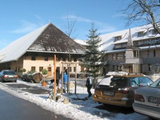
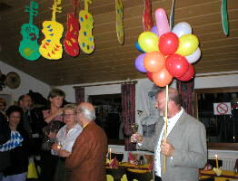
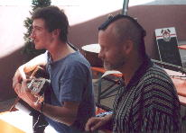

Feste

|
Bei Martha Pfammatter im Wallis – Die Ofenrohre spielten bei Marthas 50'stem in Naters bei Brig. |
 |
Inges Geburtstag am Schauinsland – Ein unvergessliches Fest mit Musik und Aussicht. |

|
Karchers Silberhochzeit – Die Ofenrohre spielten zur silbernen Hochzeit auf. | Dörtes Fest in Landeck – Musik und gute Laune bei Dörtes Feier in Tirol. | |
|
 |
Bernhards Geburtstage – Runde Geburtstage werden bei Bernhard ordentlich gefeiert. |
 |
Neftis Auftritte – Nefti ist nicht nur bei den Ofenrohren aktiv – hier ein Blick auf ihre weiteren Auftritte. |